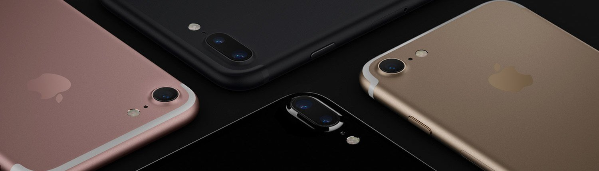
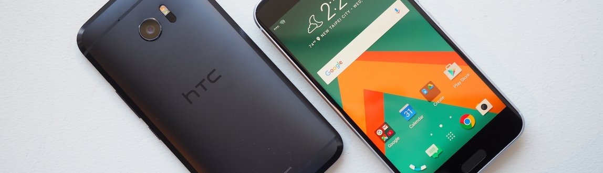
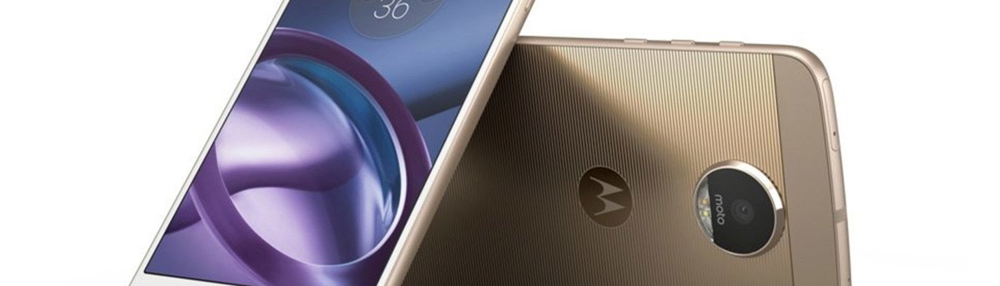
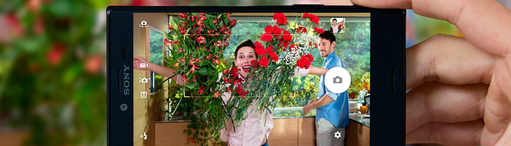
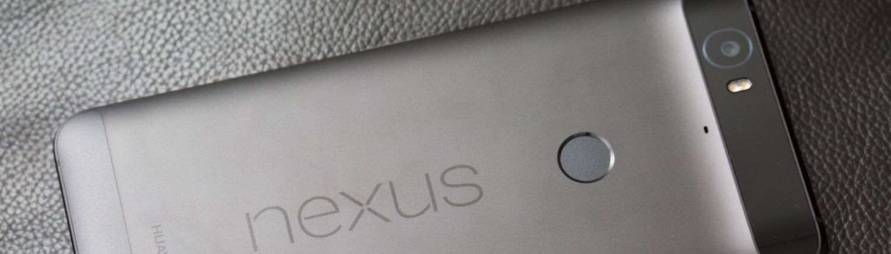
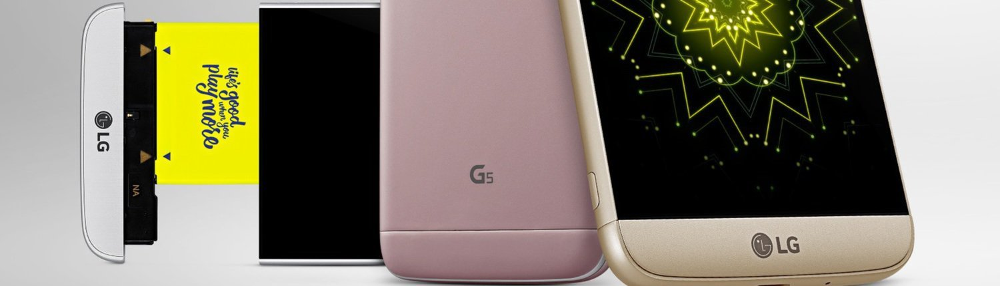
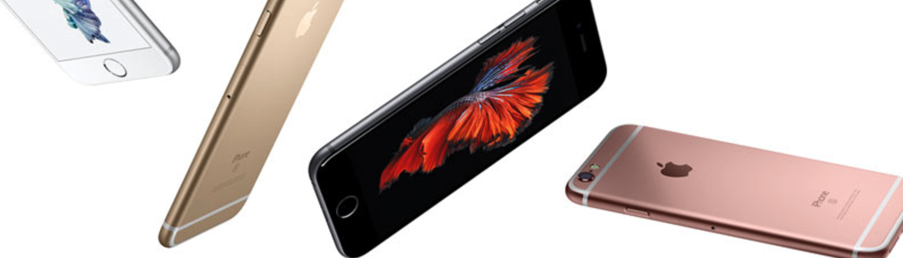

Apple Iphone 7

Apple mantiene la resolución y tamaño de la pantalla del iPhone 7, que es de 4,7 pulgadas y 750 x 1334 píxeles. Pero ha mejorado notablemente la calidad de la misma con soporte a la gama de colores DCI-P3. Ahora tiene un brillo de hasta 625 nits, con un contraste 1400:1, por lo que se va a ver perfecta con la luz directa del sol. Mantiene el 3D Touch, por lo que en ese apartado no hay cambios. El botón de inicio ahora incluye sensores de presión para añadir nuevas funcionalidades, utilizables en aplicaciones de terceros.
El procesador es un A10 Fusion, con coprocesador M10, que mejora notablemente con respecto al A9. Ahora es un cuatro núcleos, incluyendo 3.300 millones de transistores, y es un 40 % más rápido que el A9. Los dos núcleos secundarios consumen una quinta parte de los principales, para tareas con baja necesidad de potencia. Nada nuevo en el mundo de los procesadores ARM. La GPU es un 50 % más rápida que la del Apple A9, con la eficiencia en mente, ya que consume un 33 % menos que la PowerVR utilizada en el modelo anterior.
Incluyen la tecnología de sensores de presión al botón de inicio para añadirle nuevas capacidades, y será programable por aplicaciones de terceros. La cámara también mejora manteniendo los 12 megapíxeles, con un sensor de seis lentes, apertura f/1.8, la incorporación de estabilización óptica en ambos modelos.
El flash True Tone, que ahora incluye cuatro ledes, ahora cuenta con un sensor de parpadeo de la luz para contrarrestar efectos no deseados en las fotografías, con un ISP avanzado para mejorar enormemente la calidad de las fotografías. La cámara frontal es de 7 megapíxeles, con estabilizador por software. El iPhone 7 Plus añade una segunda cámara trasera de 12 megapíxeles, de gran angular, para realizar un zum óptico de dos aumentos, al que se añade el zoom digital de hasta los 10 aumentos, además de añadir efectos de profundidad.
Eliminan el conector de audio de 3,5 mm, y el Lightning es el nuevo conector de audio digital con el que se usarán nuevos auriculares específicos, aunque el iPhone incluirá un adaptador en su caja. Lightning es un conector ya en uso para el audio, lo han eliminado para hacer espacio en el interior y reducir el grosor, y sobre todo porque el audio digital es el futuro y aporta enormes ventajas a la hora de disfrutar de la música.
HTC M10

HTC se ha redimido en la gama alta donde sus dos últimos teléfonos estuvieron lejos de tener el éxito que esperaban. Con el HTC 10 han vuelto a los orígenes y a lo que debe ser un buen teléfono de 2016, aportando un buen diseño en aluminio con los bordes del cristal de la pantalla redondeados así como los laterales, con lo que es un teléfono muy cómodo de sujetar y usar.
La pantalla de 5,2 pulgadas QHD aporta unos colores vivos y un valor de brillo cercano a los 450 nits, con lo que se puede utilizar en exteriores sin demasiados problemas. El lector de huellas dactilares se sitúa en el botón de inicio frontal, que es la posición idónea para ellos. El procesador Snapdragon 820 es de lo más potente de 2016, y llevarlo incluido es garantía que al menos se tendrá la máxima fluidez de uso, con Android 6.0 preinstalado.
HTC ha modificado la disposición de los altavoces para incluir uno frontal para frecuencias altas y otro inferior para que actúe de subwoofer, aunque en el apartado del DAC de audio de 24 bits utilizado prometen una gran calidad de sonido a través de los auriculares, e incluyen unos con diseño mejorado para aprovechar mejor las capacidades del teléfono en este terreno. La batería tiene una buena duración, aunque no tan buena como otros teléfonos con mayor capacidad o más optimizados, pero durará hasta que se vuelva a casa por la tarde.
La cámara trasera el mismo sensor Sony IMX377 de 12 megapíxeles utilizado en otros teléfonos que rinden estupendamente como el Nexus 6P o el Nexus 5X, capaz de grabar a cámara lenta y vídeo a 4K. Cuenta con apertura f/1.8, tamaño de píxeles de 1,55 µm, y un sensor láser para el autoenfoque que le dará una buena respuesta en condiciones de baja iluminación. Incluye también estabilización óptica de imagen, al igual que la cámara frontal, que usa en su caso un sensor Samsung S5K4E6 de 5 megapíxeles con apertura f/1.8.
Galaxy S7
El Galaxy S7 es una renovación del Galaxy S6 con los cambios justos como para mejorarlo notablemente. La pantalla de tipo OLED tiene un menor consumo a pesar de ser QHD, con una característica de siempre activa configurable para que muestre cierta información elegida por el usuario. Por lo demás, se trata de prácticamente la mejor pantalla en un teléfono del mercado, con un brilo de 500 nits.
El procesador es un Exynos 8890, con un gran rendimiento de procesamiento y de la gráfica Mali T880. La autonomía también mejor notablemente, destacando por encima de otros teléfonos con los que compite, pero sigue dando la duración habitual de estos teléfonos de un día con un uso intenso o un par de días con un uso moderado.
El almacenamiento de tipo UFS 2.0 del teléfono es ultrarrápido, con unas velocidades cercanas a los 220 MB/s de lectura secuencial y 60 MB/s de escritura secuencial. Samsung también ha mejorado la capa de personalización de Android, de la que saca provecho con el lector de huellas dactilares frontal (la ubicación idónea). El teléfono también posee resistencia a agua y polvo, y posee carga inalámbrica junto a Wi-Fi 2x2 802.11 ac MU-MIMO.
Lenovo Moto Z

El Moto Z incluye una pantalla de 5,5 pulgadas con resolución QHD, que se encargará de mover un Snapdragon 820 y su GPU integrada Adreno 530. Viene con 4 GB de memoria LPDDR4, 32 GB de almacenamiento interno ultrarrápido de tipo UFS 2.0 (un paso más cerca de la velocidad de los SSD) y lector de tarjetas microSD de hasta 2 TB. Sus 5,2 mm de grosor permiten incluir en su interior una batería de 2.600 mAh
Incluye Wi-Fi 802.11 ac, NFC, Bluetooth 4.1 y LTE Cat. 9. El lector de huellas dactilares está integrado en el frontal, que es el sitio idóneo para estos lectores. La cámara de 13 megapíxeles trasera tiene una apertura f/1.8, y es capaz de grabar a 4K y 30 FPS, e incluye estabilizador óptico de imagen. La frontal de 5 megapíxeles es de apertura f/2.2 y es de gran angular, e incluye flash.
La polémica se centra en el conector único USB-C, y por tanto los que quieran conectar unos auriculares con conector de 3,5 mm tendrán que recurrir a un adaptador que se incluirá junto al teléfono. Este tipo de conectores proporcionan ciertas ventajas, parte de ellas en futuros auriculares en los que se incluya electrónica más compleja, y en realidad es lo que permite que el grosor del teléfono sea de tan solo 5,19 mm.
La parte trasera incluye un conector para los Mods o complementos externos que añaden funcionalidades, como añadir batería adicional y carga inalámbrica, o mejoras fotográficas. Existen diversos modelos, con precios que van desde los 80 a los 350 euros.
Xperia ZX

El Xperia XZ es un buen teléfono de gama alta, con el que Sony ha puesto un nuevo comienzo para su gama de teléfonos, con un diseño mejorado en el que el marco es de plástico y la cubierta trasera de aluminio. El cristal frontal se curva hacia los lados, y en general es cómodo de utilizar, aunque es un teléfono algo grande, de 146 mm de altura, pero dentro de lo realidad del mercado de 2016.
Utiliza un conector de carga USB 2.0 tipo C. El teléfono está hecho a prueba de agua, y el lector de huellas dactilares que incluye está situado en el botón de encendido del lateral derecho. La pantalla de 5.2 pulgadas mantiene una resolución de 1920 x 1080 píxeles, pero es de tipo IPS, por lo que da la misma nitidez que las OLED de tipo QHD. Tiene una estupenda reproducción de colores, con 600 nits de brillo y 1350:1 de contraste, y permite que se vea perfectamente con la luz directa del sol.
El procesador es un Snapdragon 820, que se comporta magníficamente en el día a día, y que en gráficos, debido a que está combinado con un panel 1080p en lugar de 1440p, se comporta mejor que los teléfonos de la competencia, duplicando los FPS con respecto a teléfonos como el S7 o el G5. La duración de la batería se sitúa en unas 9 horas de uso, por lo que no habrá problemas para terminar el día con algo de batería si se le da un uso intenso.
La cámara de este teléfono es de 23 megapíxeles con un sensor Sony IMX300, con un sistema de seis lentes, apertura f/2.0 y es de gran angular. Saca fotos muy buenas tanto a plena luz del día como en interiores y de noche, y puede grabar vídeo a 4K y 30 FPS, además de a cámara lenta, y con diversos filtros.
Google Nexus 6P

El Nexus 6P es un teléfono de gama alta por derechos propios, debido a la combinación de un gran diseño en aluminio, una estupenda pantalla y gran cámara. La pantalla cuenta con una estupenda reproducción de colores, aunque su valor de brillo es quizás un poco bajo para lo que sería deseable para su uso en exteriores, ya que se sitúa en torno a los 350 nits.
El procesador Snapdragon 810 hace que funcione todo perfectamente fluido, y las opciones de almacenamiento parten de los 32 GB, con 3 GB de RAM. Más que suficiente para que con un buen uso, y las continuas actualizaciones de Android proporcionadas directamente por Google (ahora cuenta con Android 7.0), sea un teléfono que dure años. El punto gris es la falta de una tarjeta micro-SD y una autonomía que podría ser mejor, aunque debería servir para llegar de sobra al final del día al usuario medio.
La cámara está entre las mejores del mercado. Toma unas fotos muy buenas con poca luz, en situaciones de buena luz son excepcionales, y graba vídeo a 4K y 30 FPS. Por precio, sobre los 400 euros en septiembre de 2016, es un teléfono increíblemente completo y que no flojea en ningún apartado, incluida la incorporación de un lector de huellas para pagos sin contacto y desbloqueo, entre otros.
LG G5

LG ha apostado en esta ocasión por innovar en su teléfono al permitir que se extraiga la parte inferior del teléfono. Esto permite intercambiarla con otros módulos que ha puesto a la venta, junto con otros accesorios como unas gafas de realidad virtual o una cámara de 360º.
El teléfono en sí incluye el mejor hardware que se puede encontrar ahora mismo, con un potente procesador Snapdragon 820 y 4 GB de RAM, junto a 32 GB de almacenamiento. La cámara está nuevamente entre las mejores del mercado, y quizás la mayor pega que tenga es su enorme tamaño para una pantalla de 5,3 pulgadas con resolución QHD.
Iphone 6s

El protagonista este año del iPhone 6s es uno: 3D Touch. Este sistema de sensor de presión es el responsable de que se haya revolucionado la interactuación con una pantalla táctil, abriendo nuevas posibilidades para ahorrar tiempo. Si por ejemplo aprietas en un icono de la pantalla de inicio, aparece un desplegable de opciones, o si aprietas en una miniatura de una foto, la verás más grande, y apretando un poco más abrirás otra aplicación asociadas.
El teléfono mantiene la misma estética que el iPhone 6, con un poco más de peso y grosor debido a la nueva característica 3D Touch. La batería se ve reducida a 1.715 mAh, pero la autonomía del teléfono se mantiene igual. No es excepcional, pero no es para nada mala, y se puede comparar con la del LG G4, aunque depende de para qué. Si vas a ver vídeos, te puedes pasar hasta 10 horas viéndolos, pero si te pones a jugar, es probable que no llegues a las 3 horas de autonomía.
La pantalla ha mejorado ligeramente su calidad, y el sensor Touch ID ahora es más rápido. El coprocesador M9 permite activar por voz a Siri, la conexión Wi-Fi ahora es el doble de rápida, y se incluye mejor LTE y soporte a más bandas (prácticamente todas las usadas). El terreno de la conectividad no es ningún problema en el iPhone 6s.
La cámara también ha mejorado, pasando a ser de 12 megapíxeles, con mejoras en el color. Apple ha añadido un sistema para mejorar la calidad de cada píxel capturado, y el resultado es excelente. Además ahora puede grabar vídeo a 4K, y la cámara frontal pasa a ser de 5 megapíxeles. Nada novedoso, pero que le sigue permitiendo estar entre las mejores cámaras del momento.
Mención adicional merece el procesador Apple A9, que con dos núcleos consigue prácticamente la misma potencia que los ocho núcleos del Snapdragon 810. Puesto que en la mayoría de situaciones sólo se usa uno o dos núcleos, el rendimiento final del iPhone 6s está muy por encima del resto de la competencia. Salvo en el terreno gráfico, que si bien es excelente, no es el mejor, ya que en juegos sí que es preferible contar con procesadores de cuatro núcleos.
Pero en general, es un teléfono excepcional, y la característica que brilla más y que lo pone en cabeza es 3D Touch.
Manuel